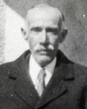
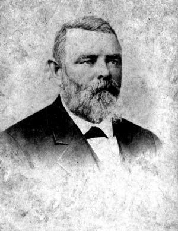
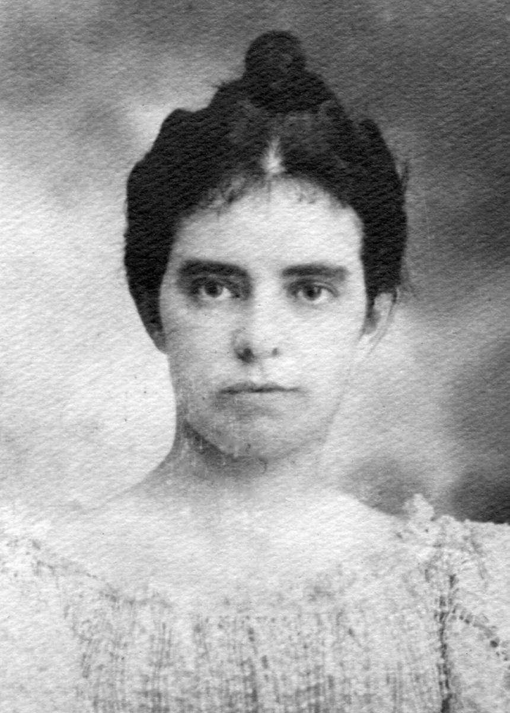
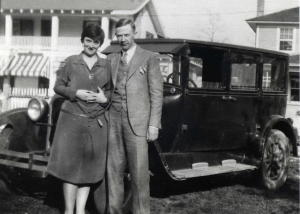
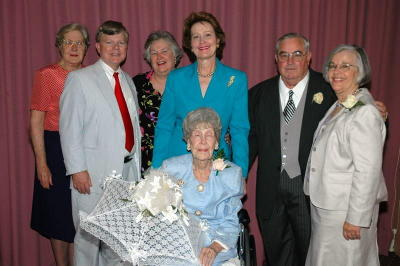
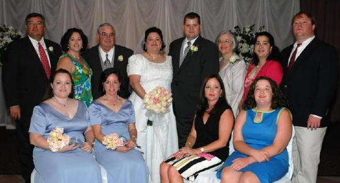

|  1867-1931 |
 1834-1898 |
 |
 1902-1983 |
 Wedding Day, November 26, 1930 |
 Vincent Mathias Streff, Anita Helen Margaret, Vincent Paul, Dorothy Ann December 30th 1934 |

December 30th 1934 |
| The Family of Omer Frederick Kuebel, Sr. and Jocelyn Claverie  Jocelyn Kuebel Hallaron, Ross Dozier, Karyl Kuebel Babst, Lisa Kuebel Dozier, Omer Frederick Kuebel, Jr., Joal Betz Kuebel
Jocelyn Claverie Kuebel |
The Family of Omer Frederick Kuebel, Jr. June 18, 2005

Omer Frederick "Rick" Kuebel III, Katherine Kuebel McBride, O. F. Kuebel Jr., Kristen Kuebel Beevers, Christopher Beevers, Joal Betz Kuebel, Caroline Kuebel Fee, Charles Kuebel
Seated: Marie Kuebel Morris, Charlotte Kuebel Kramer, Carey Kuebel Kernion, Joanna Kuebel |